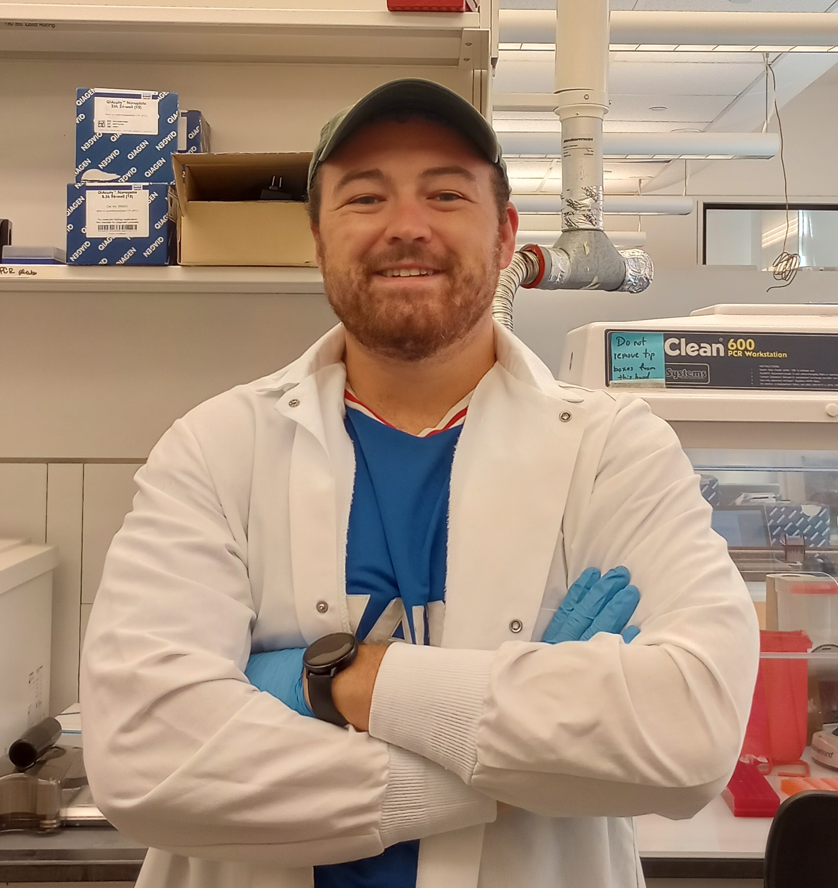
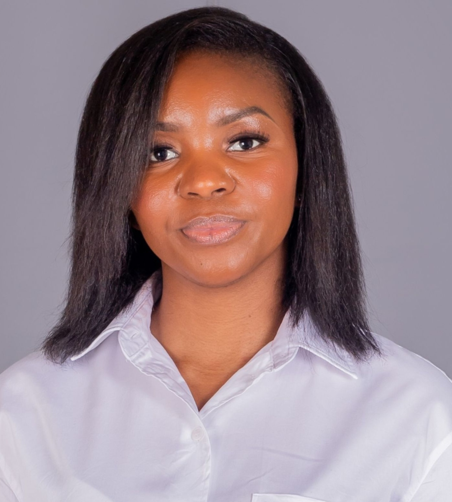

When our department decided it was time for a visual refresh, rather than hiring an external agency, we turned to the creative talent within our own walls. A team of Early Career Researchers (ECRs) from across our four research groups came together to develop a new visual identity that would represent the breadth and depth of our work. Here's the story of how they did it.
The Challenge
The Water, Public Health and Environment department encompasses four distinct research groups, each with their own focus areas and established identities. The challenge was to create a unified visual system that would:
- Represent all four research areas cohesively
- Reflect our scientific approach while remaining accessible
- Work across various platforms (web, print, presentations, signage)
- Be flexible enough to evolve with our research
- Differentiate us from other departments within the university
The ECR Team
Our branding team brought together PhD researchers from across the group, with varied perspectives and complementary skills:

Jack Dalton
PhD Researcher, Indoor Air
Background in engineering and graphic design

Gettie Shiinda
PhD Researcher, Sanitation & WASH
Experience in science communication
The team was supported by Prof. Catherine Noakes, who served as the faculty liaison, and Anushi Khandare (that's me!), who documented the process for this blog post.
"This project was a unique opportunity for ECRs to contribute to the department beyond our research. It allowed us to use creative skills that aren't always showcased in academic work."
— WPE ECR TeamThe Design Process
The team followed a structured design process over three months:
1. Research & Discovery
The first phase involved understanding how our department is perceived, both internally and externally. The team:
- Surveyed faculty, staff, and students about perceptions of the department
- Analyzed visual identities of similar departments at other institutions
- Conducted interviews with representatives from each research group
- Gathered examples of existing materials to understand current usage
A key insight from this phase was that while our individual research groups were well-understood within their respective fields, the connections between them weren't always clear to outsiders. The new visual identity needed to highlight these interconnections.
2. Concept Development
Using insights from the discovery phase, the team developed three distinct concept directions through a series of collaborative workshops. Each concept represented a different approach to visualizing our department's work:
The three concepts were:
- Flow: Inspired by water movement, using fluid forms and gradients to represent connectivity
- Elements: Using geometric shapes to represent the four research areas, with a system for showing their interactions
- Impact: Focusing on the real-world effects of our research, using a visual language of concentric circles
After presenting to a committee of faculty and staff, the "Elements" concept was selected for further development, with some aspects of "Flow" incorporated.
3. Design Development
With a direction established, the team refined the visual system, developing:
Color Palette
Typography
Graphic Elements
Logo System
Color System
The final color palette included five key colors:
- Primary Blue (#77AAD4): Representing water and Indoor Air group
- Secondary Blue (#6F8AC6): Representing BioResources group
- Purple (#9F90C5): Representing Public Health group
- Teal (#8AC9C1): Representing Sanitation group
- Dark Gray (#53525a): Neutral base color for text and accents
Typography
The team selected a type system that balanced academic credibility with modern clarity:
- Headings: FreightSans Pro Bold
- Display: Monarcha Regular
- Body: Nunito Regular
"We wanted to create a system that would be instantly recognizable as WPE, but flexible enough that each research group could maintain their identity within the broader framework."
— Jack Dalton, PhD Researcher4. Implementation
The final phase involved creating templates and guidelines for consistent application across various media:
- Website design
- PowerPoint templates
- Publication layouts
- Social media assets
- Signage and environmental graphics
- Brand guidelines document
Skills Development & ECR Benefits
Beyond creating a successful new visual identity, this project provided valuable professional development for the ECRs involved:
- Project Management: Coordinating complex work across multiple stakeholders
- Client Communication: Presenting and defending design decisions
- Interdisciplinary Collaboration: Working across research specialties
- Design Thinking: Solving problems through creative processes
- Technical Skills: Development of digital design capabilities
Team members have already reported using these skills in their research work, particularly in data visualization, presentation design, and stakeholder communication.
"This project helped me think differently about how we present our research. I've already applied what I learned to my recent conference poster, and the feedback was incredibly positive."
— Gettie Shiinda, PhD ResearcherLooking Forward
The new visual identity has now been fully implemented across the department. The website you're browsing right now is one result of the team's work! Other upcoming applications include:
- New environmental graphics in the WPE building
- Branded materials for the upcoming Urban Environmental Health conference
- A refreshed department newsletter template
- Social media campaign highlighting each research group
The ECR branding team continues to meet quarterly to review implementation and make adjustments as needed. Their experience has inspired a new "Creative ECR" initiative that will offer similar opportunities for early career researchers to contribute to departmental projects beyond their research focus.
Conclusion
The WPE visual identity project demonstrates the value of recognizing and utilizing the diverse talents within our ECR community. By turning to our PhD students and postdocs for this creative challenge, we not only developed a cohesive and effective brand system but also provided valuable professional development opportunities that extend beyond traditional academic training.
The success of this project has prompted discussions about other ways to incorporate ECR skills and perspectives into departmental initiatives, recognizing that our early career researchers bring a wealth of talents beyond their specific research expertise.
Leave a Comment